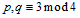
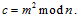
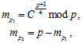
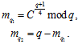
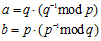
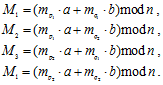

5.2.3. Криптосистема Рабина
5.2.3. Криптосистема Рабина
Существует похожая на RSA криптосистема Рабина, основанная на сложности извлечения квадратного корня по модулю составного числа.
Она состоит из следующих операций:
1. Получателем выбираются два больших простых числа удовлетворяющих условию:
, p, q – секретный ключ,
 − открытый ключ.
− открытый ключ.
2. Отправитель выполняет шифрование данных .
Процедура расшифрования состоит в извлечении квадратного корня из шифртекста c и требует знания разложения n на множители. Предварительно вычисляют корни из c по модулю p и q по следующим формулам:
 
Далее вычисляем два значения:

и находим четыре корня из с с их использованием:

Правильным открытым текстом является только одно из значений, поэтому шифрование неоднозначно. Для правильного расшифрования приходится добавлять к значению М некоторую мета-информацию для возможности выбора из четырех корней верного значения, являющегося открытым текстом.
Криптостойкость данной схемы также зависит от сложности решения задачи факторизации.